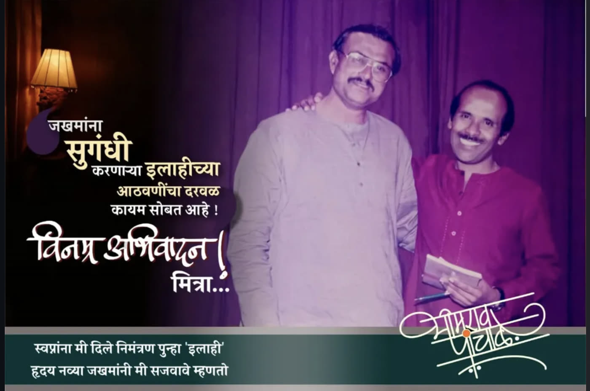
Ilahi Jamadar
इलाही जमादारThe poet of fragrant wounds. Their partnership gave Marathi some of its most loved ghazals.
जखमा अशा सुगंधी झाल्यात काळजाला
केलेत वार ज्याने तो मोगरा असावा
Gazalnawaz Bhimrao Panchaleजखमा अशा सुगंधी झाल्यात काळजाला
केलेत वार ज्याने तो मोगरा असावा “Such fragrant wounds now bloom upon my heart — whoever struck me must have been a jasmine.” — Ilahi Jamadar, in Bhimrao’s voice
Far from any stage, in a living room, Bhimrao sings for Dr. Prakash Amte and Dr. Mandakini Amte — the doctor couple who have given their lives to serving the Madia Gond people at Hemalkasa. Two lifetimes of service, one ghazal.
Born on 30 March 1951 in Ashtagaon, Amravati district, in the heart of Vidarbha, Bhimrao Panchale began learning classical music at the age of nine.
He trained for eight years before he ever sang in public — the ragas first, the words later. He learned Urdu so that he could understand the ghazal from the inside, not merely sing it. In those early years he performed sugam sangeet across Maharashtra, slowly finding his way toward the form that would define his life.
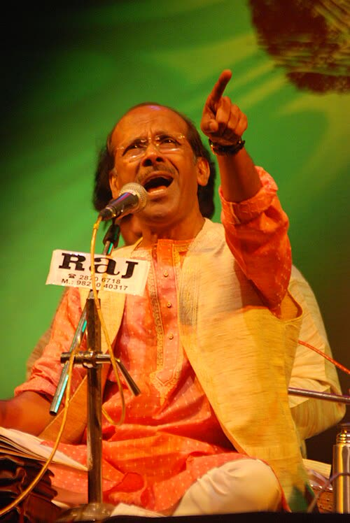
At Rajkamal Chowk in Amravati, a young listener sat in a corner and heard Suresh Bhat — the poet who would become the Ghazal Samrat of Marathi.
That meeting changed everything. Bhat was writing ghazals in Marathi at a time when many believed the form belonged only to Urdu. He saw in the young singer the voice his words needed. “I give the words,” Bhat told him, “you turn them into gold.”
In 1972, Bhimrao presented his first concert of Marathi ghazals. It was the start of a fifty-year mission.
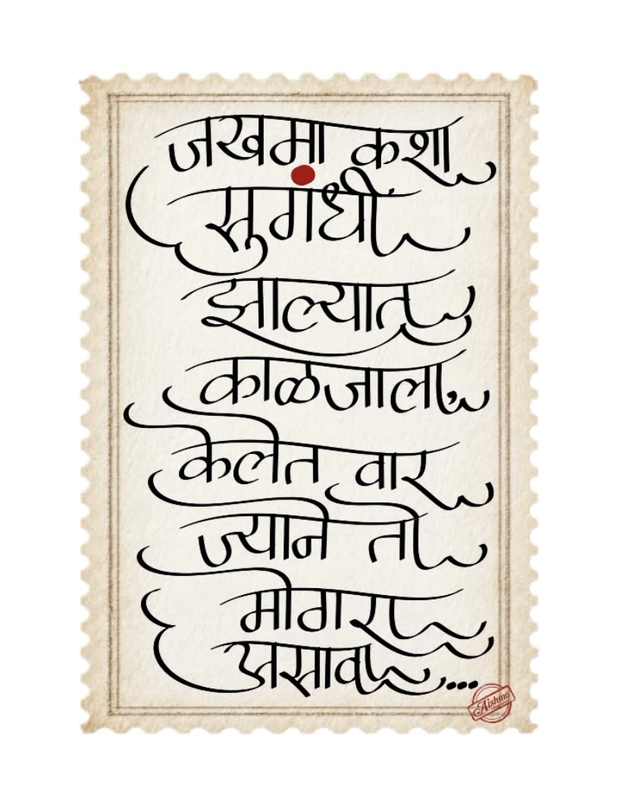
After a decade of touring, he moved to Mumbai — the city he credits with giving him his platform.
From there his mehfils travelled across India and to 17–18 countries, including the United States. More than two thousand evenings later, his approach has not changed: meaning before ornament, feeling before technique. He sings the poet’s thought so clearly that audiences hear the ghazal for the first time, every time.
He meant to retire at sixty. The audience would not let him.
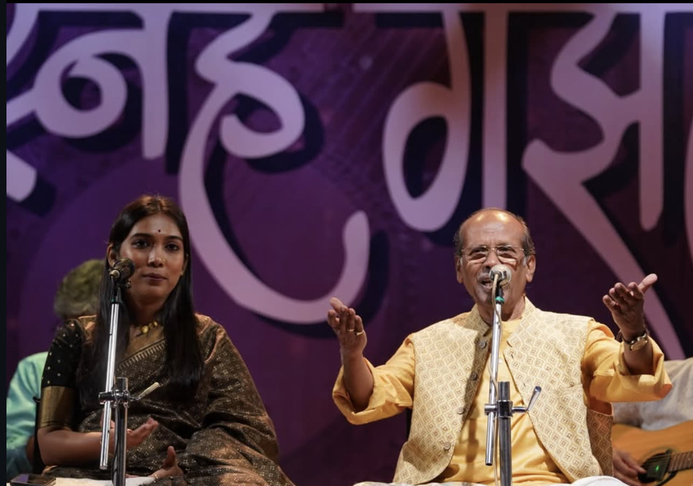
In conversation with BBC News Marathi, he looks back on a life measured in couplets — and still answers in verse.
Five decades and two thousand mehfils on, the voice is unhurried and the humility intact. Turn the sound on to hear him.
स्वप्नांना मी दिले निमंत्रण पुन्हा ‘इलाही’
हृदय नव्या जखमांनी मी सजवावे म्हणतो
“Once more I have invited dreams, Ilahi — I wish to adorn my heart with new wounds.”
A ghazal is a string of independent couplets, each a complete thought in two lines. Tap through the couplet that became Bhimrao’s signature to see how the form is built.
30 March, in Vidarbha, Maharashtra.
Begins training at nine; eight years of study before any public stage.
At Rajkamal Chowk, Amravati. The poet becomes his guiding light.
The beginning of Marathi ghazal as a concert art in its own right.
After a decade of mehfils across Maharashtra, he makes Mumbai his base.
6 January — a private mehfil at Sahitya Sahawas, Bandra, remembered in a handwritten note: “A mehfil never really ends.”
A felicitation concert in Mumbai marks his 60th birthday.
Conferred on 16 January.
Half a century since that first concert — and still singing.
5 August, at the 60th & 61st Maharashtra State Marathi Film Awards, Dome, Worli.
26 November, Ravindra Natya Mandir — the Vitthal Umap Foundation’s lifetime honour.
“My 75-year journey through a life of ghazal has been a joy — because of your love and blessings.”
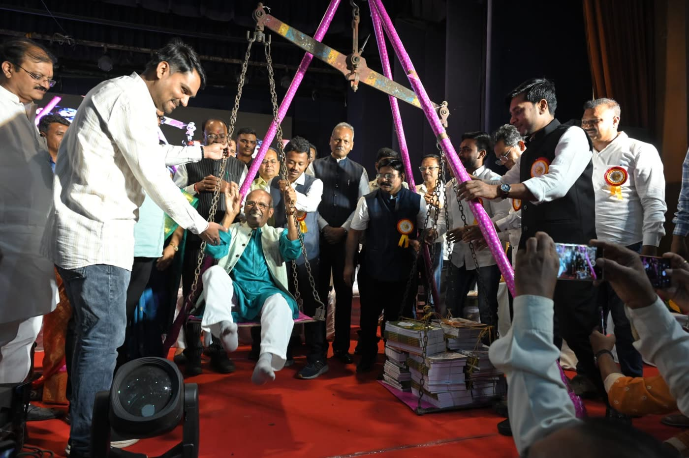
Weighed not in gold, but in books.
To mark fifty years of Marathi ghazal and his seventy-fifth birthday, friends, admirers and dignitaries gathered to honour him. At the heart of the evening was a granthtula: Bhimrao on one pan of a great scale, bundles of books on the other. For a singer who has spent his life giving voice to poets, no tribute could fit better.
Then came the garlands, the citation, the speeches — and finally, as always, the music.
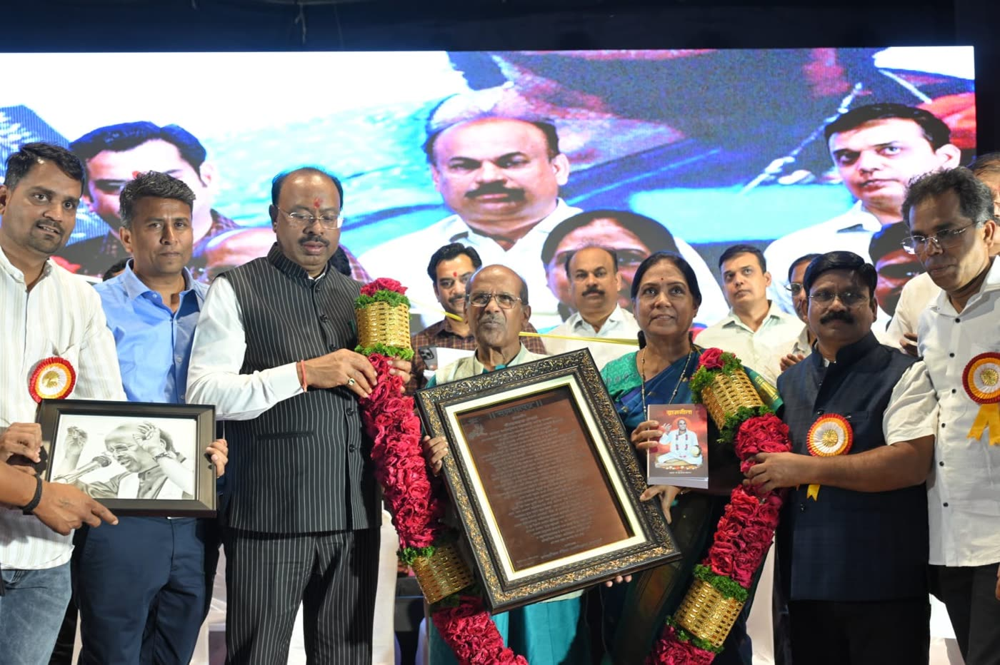
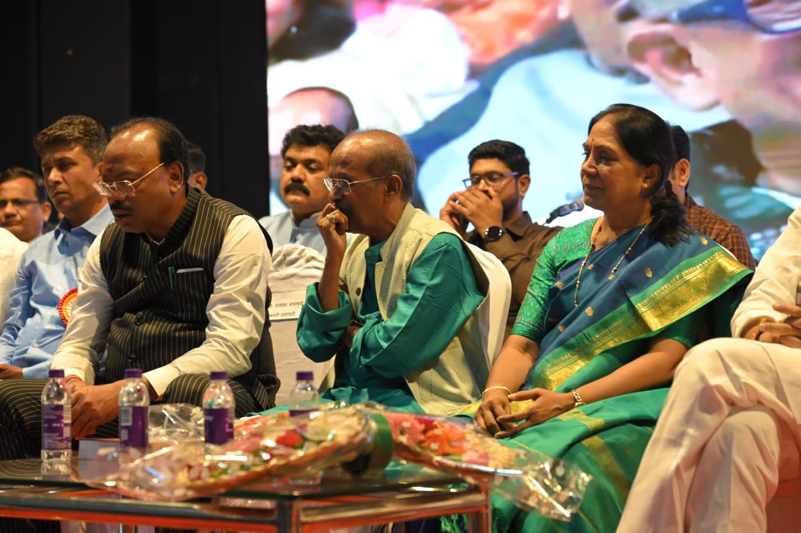
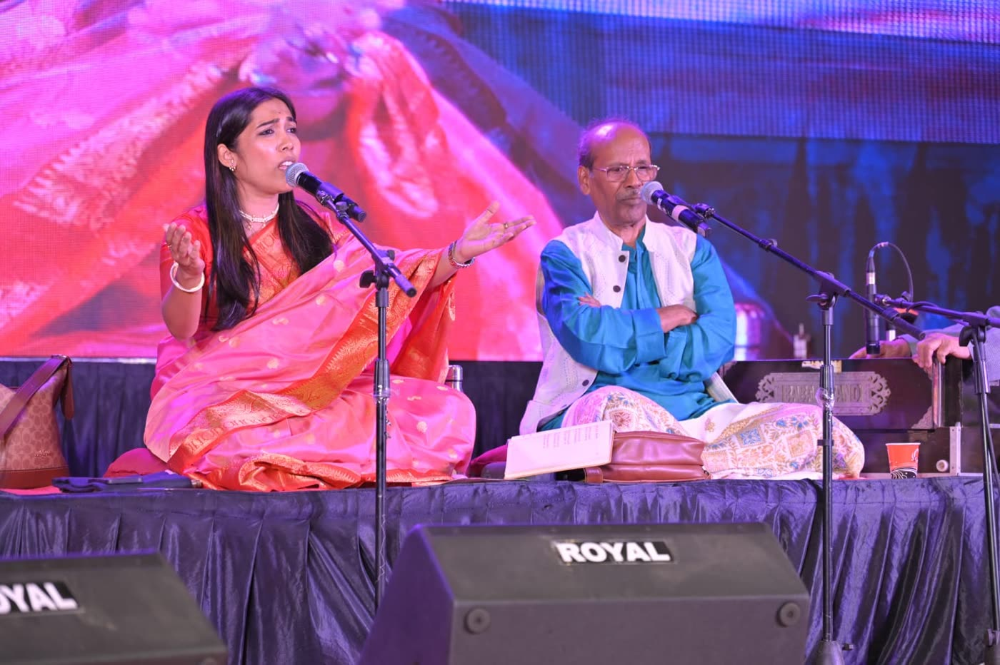
Maharashtra’s highest honour in music, presented at the diamond-jubilee Marathi Film Awards for his exposition of the ghazal and its adaptation into Marathi. “There is no moment of joy in my life to equal this,” he said on receiving it.
Lifetime achievement honour from the Vitthal Umap Foundation, presented on the folk legend’s 15th remembrance day.
Recognition of a lifetime devoted to the ghazal.
The title audiences gave him — the one he values most.

The poet of fragrant wounds. Their partnership gave Marathi some of its most loved ghazals.
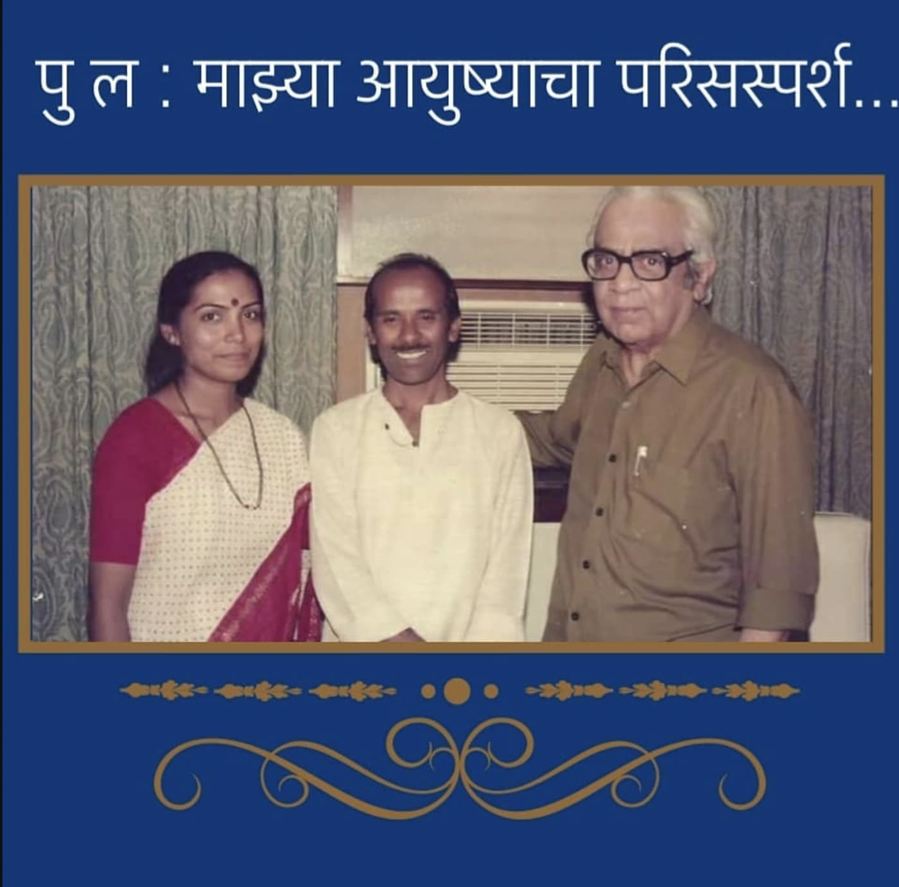
“Pu La — the philosopher’s-stone touch of my life.” A treasured meeting with Maharashtra’s beloved writer.
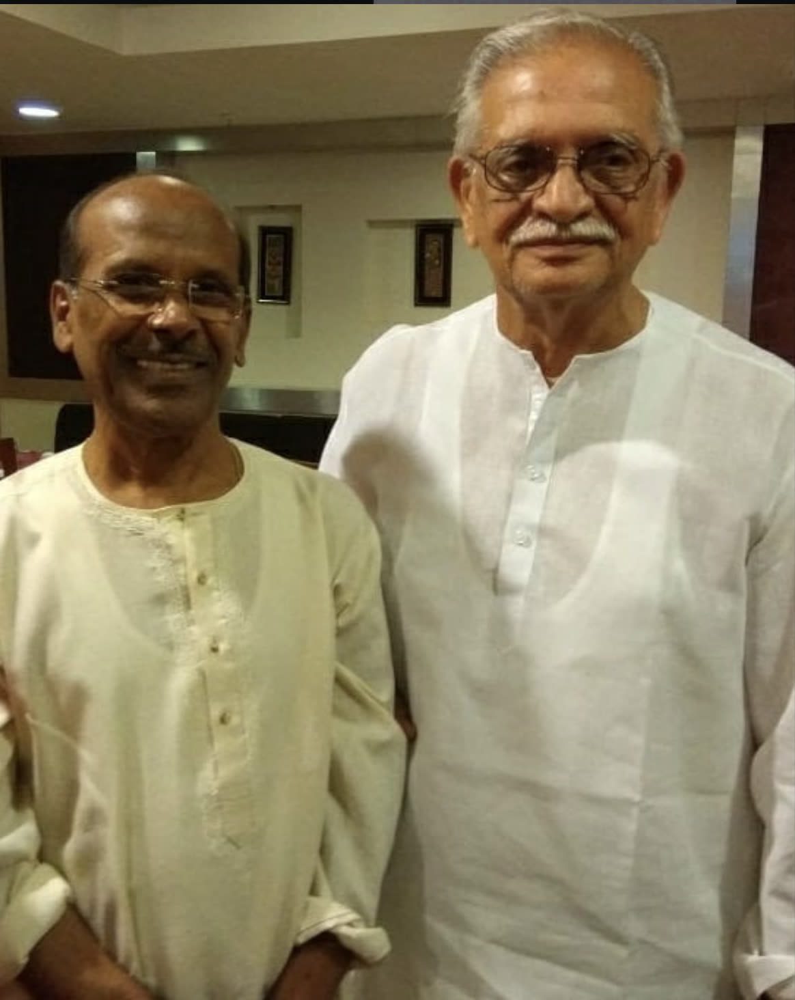
Two lifelong servants of the word, together.
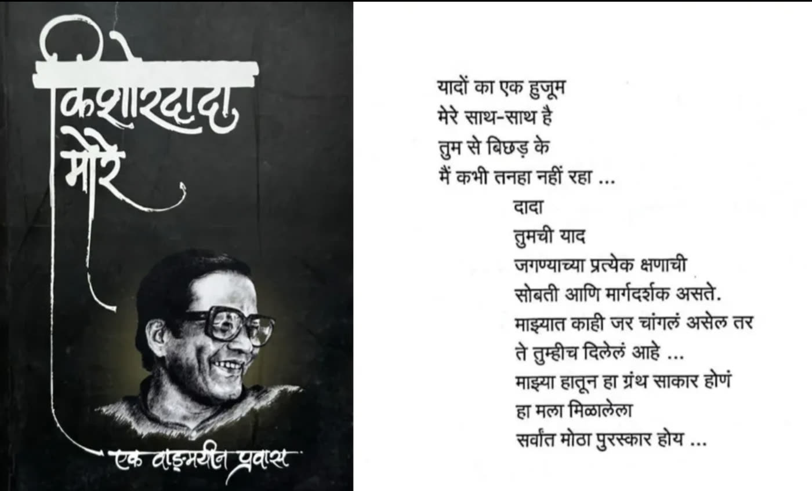
“Ek Vangmayin Pravas” — a tribute volume to a guiding elder of Marathi letters.
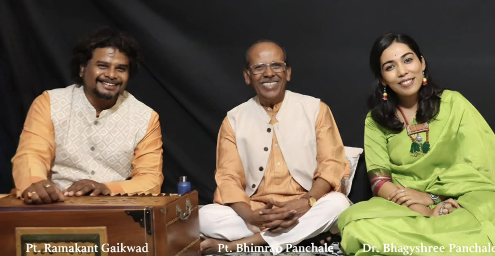
With Pt. Ramakant Gaikwad and Dr. Bhagyashree Panchale — three voices, one evening of music.
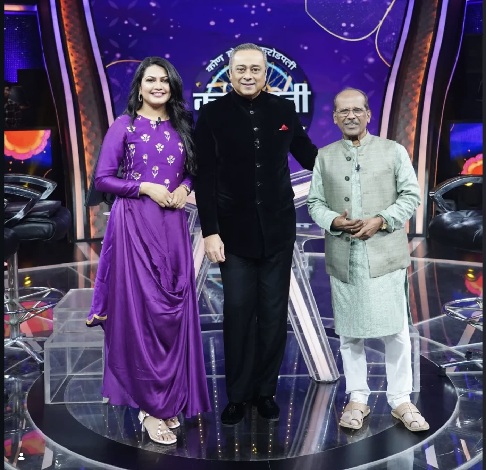
A guest on the Marathi edition of the quiz show — the ghazal reaching every living room.
Two notes, three decades apart. One from a listener after a private mehfil in 1992; one from Bhimrao himself, thanking his audience at seventy-five.
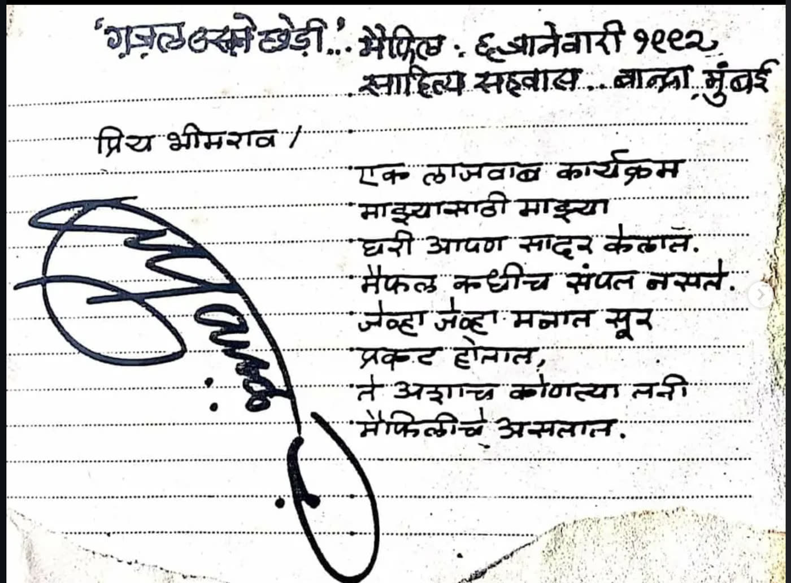
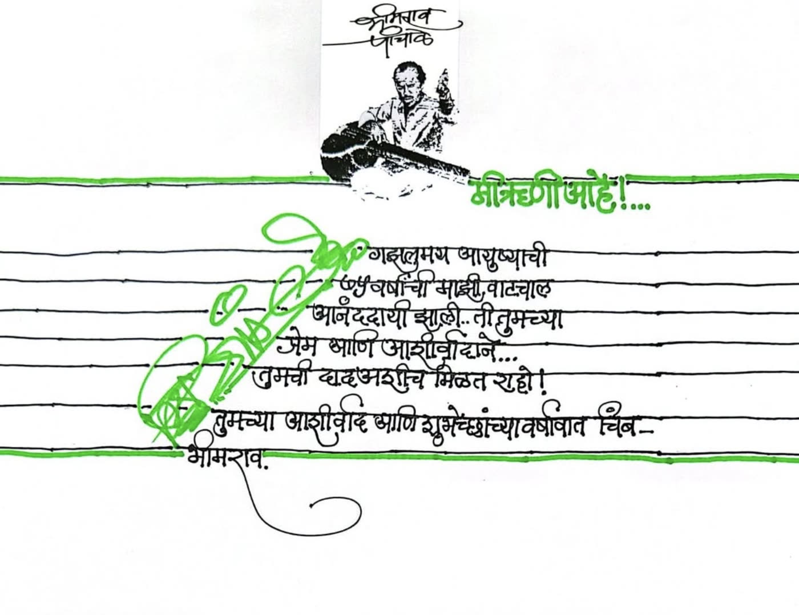
A ghazal lives only if it is passed on. Bhimrao has spent as much of his life teaching as singing.
Through his Gazal Sagar Pratishthan he has championed the Akhil Bharatiya Marathi Gazal Sammelan, gathering poets and singers from across the state. He set up a reading room in Ashtgaon named after Suresh Bhat, and has conducted 108 ghazal workshops for young poets and singers — always urging them to find their own voice rather than imitate his.
His daughter, Dr. Bhagyashree Panchale, now shares his stage — carrying the ghazal to a new generation.
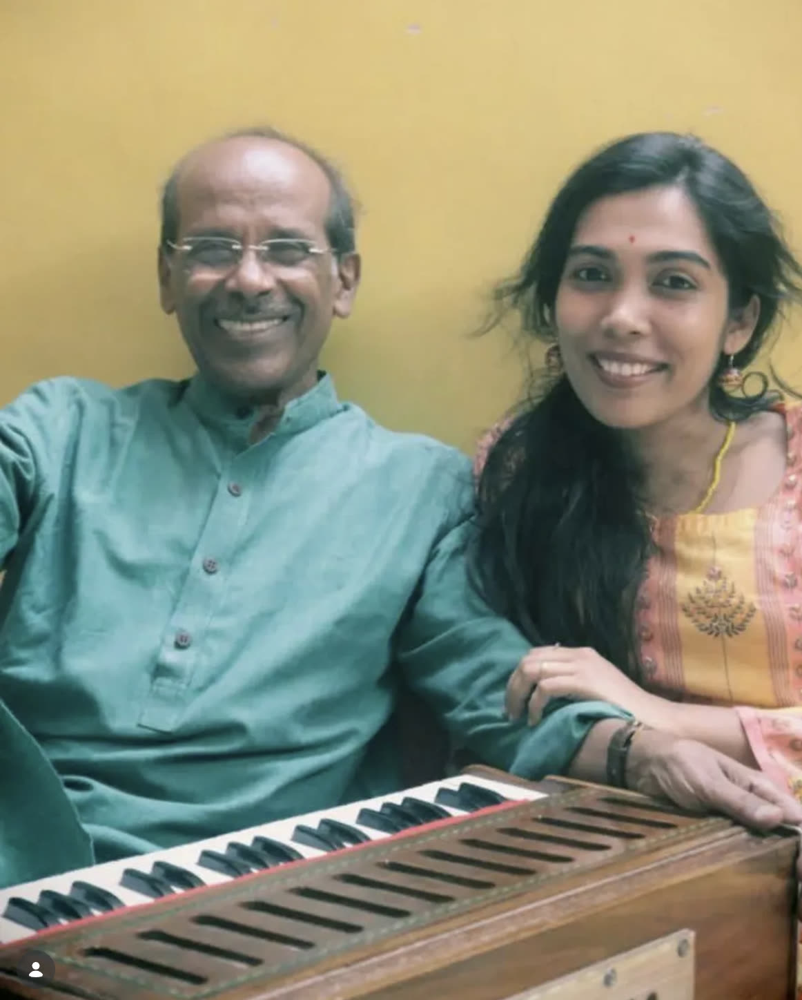
Concert dates, rare archive photos, handwritten notes and new ghazals — straight from Bhimrao Panchale.